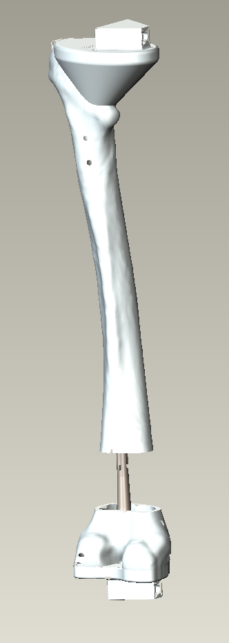

Model Updates

Another project I worked on at Stryker involved updating incorrect Femur CAD models. The lever-arm placement was incorrect in the CAD models, so I updated the placement for multiple nail, screw, distal, and proximal component assemblies. I also created new CAD assemblies for competitor nails. This project acquainted me with Creo ProE helped me become familiar with assembly references.